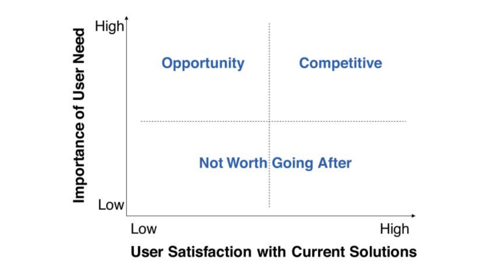

Product Vision & Strategy
How to generate the most impact? Learn where Product Managers apply the most leverage.

One characteristic of great Product Managers is that they provide direction. They drive execution based on the product’s vision and strategy.
Every company is different. They have different values, strengths, and weaknesses. By understanding these, it is easy to decide which product opportunities to pursue.
The product strategy describes how the team is going to achieve the product vision. Both keep the team aligned and support every product decision during execution.
Product Managers apply the most leverage when working on strategy. This helps everyone involved in the product to focus on the right things.
On this section
Product Vision
The product vision provides direction and inspiration for the team. It describes the end state of the product and pushes the team to think big.
There is no single way to come up with a compelling product vision. Depending on the organization, it could be a combined effort from the product team or the Product Manager and the leadership team. In any case, talking about the product’s vision on a regular basis is part of the Product Manager’s job.
The benefits of a compelling product vision are:
- Stakeholders awareness.
- Common enthusiasm and understanding.
- Team alignment during execution.
The product vision has to fit into the bounds of the company’s vision. This can be challenging if the company’s vision is not clear or well defined.
Product Managers are responsible for communicating and evangelizing the product’s vision.
Product Strategy
The product strategy describes how to achieve the product’s vision. What the product aims to accomplish and why, who is the target customer and why, and how will the team get there and why. By defining the product’s vision and strategy, a Product Manager and her team can execute towards a known destination.
Many companies think about product strategy as a product roadmap. They are great at the tactical level but not at creating, reviewing, and adapting the product strategy. A roadmap is a tactical output of a strategy. As a result, the Product Manager lacks empowerment and ends up being too busy and unfocused.
The product strategy has to fit into the bounds of the business strategy as well. The business strategy provides a set of key metrics to pursue, the boundaries. The product team lives within those boundaries to come up with the best way to hit those metrics.
The Elevator Pitch Framework
I didn’t have time to write a short letter, so I wrote a long one instead — Mark Twain
A helpful framework to come up with a product strategy is the Elevator Pitch. This framework allows us to articulate a strategy in a very clear and concise way. If you can’t sum up the strategy in a few sentences then there are important things you still need to figure it out. The often called “hard decisions”.
The following template is very simple and forces you to express your strategy in only two sentences:
FOR [target customer], WHO HAS [customer need], [product name] IS A [market category] THAT [one key benefit]. UNLIKE [competition], THE PRODUCT [unique differentiator].
This is a great starting point for a Product Manager, especially for new products or startups.
Product Roadmap
A product roadmap is a list of initiatives supported by the product vision and strategy. A product roadmap is not a product strategy but an output of it. The best roadmaps always tie back to a strategy.
There is only a limited amount of improvement you can add to a product. Saying no becomes a critical part of the process. Roadmaps only include what makes sense for the product to succeed.
Product roadmaps represent hard decisions. They are all about trade-offs. If you focus only on new features, you might end up with a Frankenstein product. But if you focus only on bug fixing, you product becomes irrelevant.
A good practice is to use Anthony Ullwick’s Opportunity Algorithm. It provides a practical way to rank product initiatives based on importance and satisfaction.
Importance + (Importance – Satisfaction)
Importance is a problem space concept that measures how valuable a need is to a customer. Satisfaction is a solution-space concept that measures how happy a customer is with a particular solution.
 From Dan Olsen’s book. Resources section.
The best opportunities to pursue live in High Importance / Low Satisfaction Needs. The need is high-value for customers and current solutions don’t meet their expectations. Disruptive innovations usually emerge from this segment.
Product Managers Leverage
Although Product Managers don’t manage people, they apply what Andrew Grove calls Managerial Leverage. This states that not every task a manager does creates the same amount of output. Some tasks create more output than others and that is where the leverage is.
A Product Manager makes many decisions everyday, so it is critical to know which ones have the most impact. Moreover, some decisions may decrease your team’s leverage. They are the ones who know how to build things so focusing on implementation details makes no sense.
Product managers exert the most leverage through vision and strategy, the rest is optimization - Brandon Chu
 From Brandon Chu’s article. Resources section.
From Brandon Chu’s article. Resources section.
Vision and Strategy: They provide direction and inspiration to the team. They are the groundwork for execution.
Scope and Backlog: They accelerate progress towards the vision. They optimize execution.
Product Managers should focus on the most impactful work first. That is the product’s vision and strategy. Only after, your team have the right foundations to operate.
This is a first draft and a just a glance of the importance of vision and strategy in Product Management. Take the time to learn from the resources below. We keep them up to date!
Do you have any feedback? Please, let us know here.